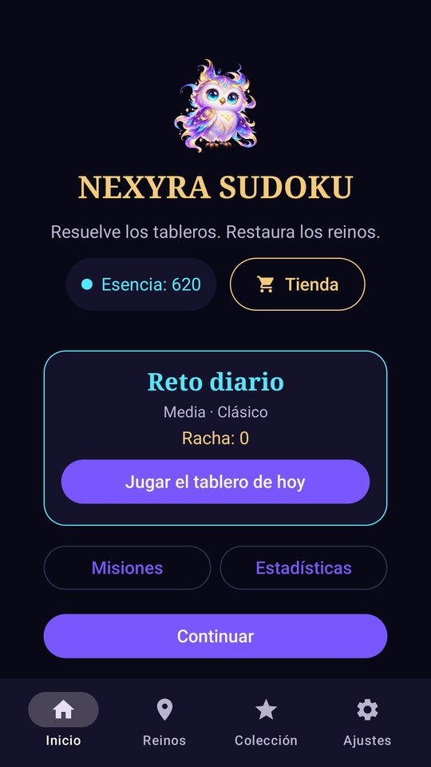
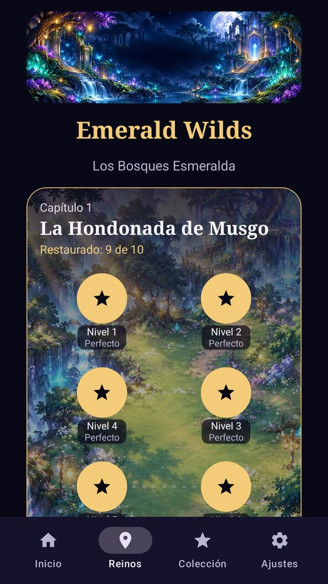
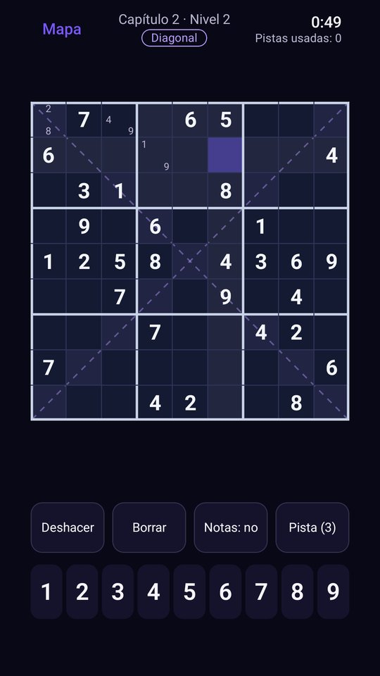
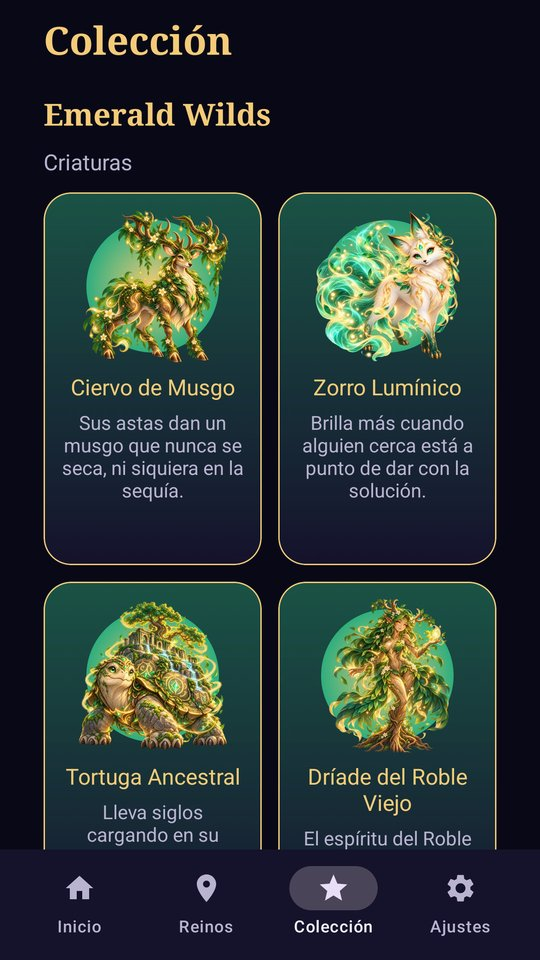
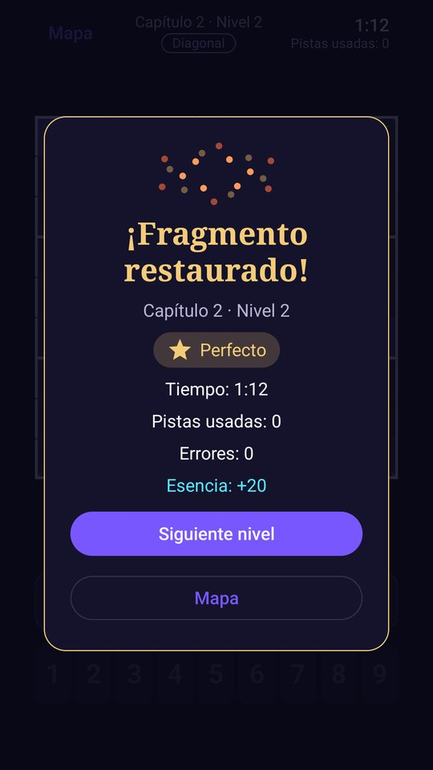
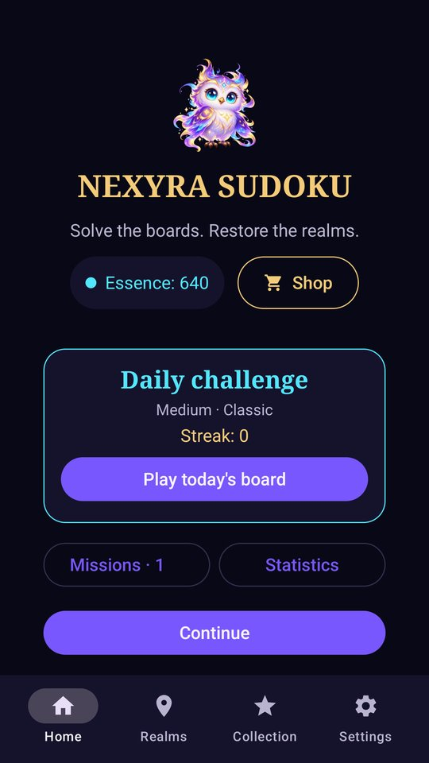
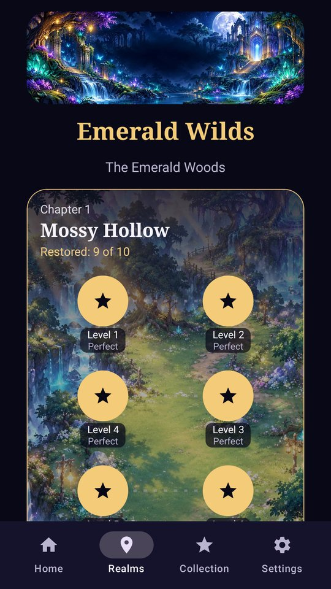
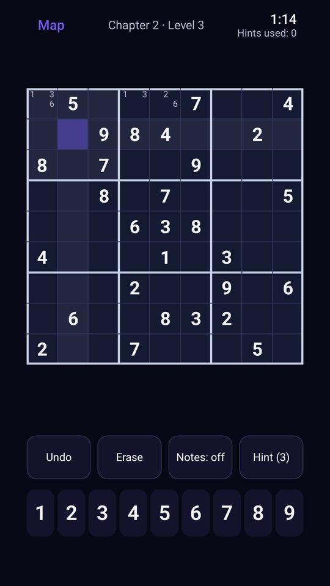
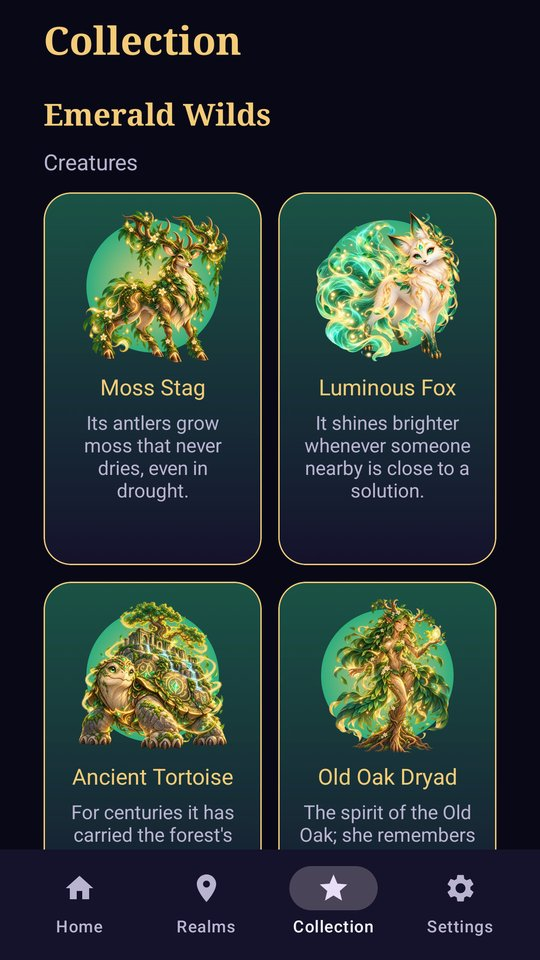
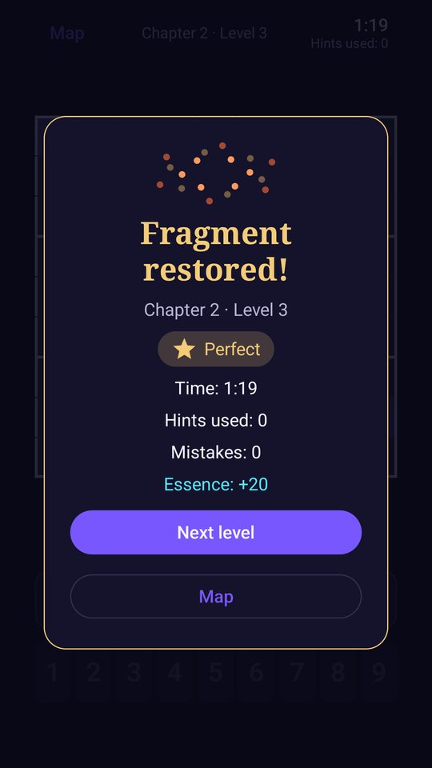

NEXYRA GAMES
NEXYRA GAMES
NEXYRA Sudoku
Resuelve los tableros. Restaura los reinos.
Solve the boards. Restore the realms.
Resolva os tabuleiros. Restaure os reinos.
Résous les grilles. Restaure les royaumes.
Löse die Rätsel. Rette die Reiche.
Risolvi le griglie. Ripristina i regni.
盤面を解いて、王国をよみがえらせよう。










Cómo se juega
Rellena el tablero para que cada fila, cada columna y cada caja de 3×3 tenga los números del 1 al 9 una sola vez. Cada tablero que resuelves devuelve la vida a un rincón de los reinos: los bosques reverdecen, la luna vuelve a brillar y despiertan las criaturas que los guardan.
- Campaña de fantasíaDos reinos, Emerald Wilds y Crystal Moon, con 80 niveles, desafíos y guardianes. Ashen Dominion llegará en una actualización.
- Aprende con LumiLas pistas no solo dan la respuesta: Lumi te señala la zona y te explica la técnica (único oculto, parejas, X-Wing…).
- Reto diarioUn tablero nuevo cada día, el mismo para todos, con racha y misiones diarias y semanales.
- ColecciónCriaturas y reliquias que despiertan al restaurar los reinos y mantener tu racha.
- VariantesSudoku clásico y Diagonal.
- AccesibleTalkBack, texto grande, opciones de resaltado y reloj ocultable.
- Juego limpioLas pistas nunca se compran. Anuncios solo entre niveles y no antes de terminar el primer capítulo; los vídeos con recompensa son opcionales. Premium quita los anuncios entre niveles.
- 8 idiomasEspañol, inglés, portugués, hindi, indonesio, alemán, francés y japonés.
How to play
Fill the board so that every row, every column and every 3×3 box holds the digits 1 to 9 exactly once. Every board you solve brings a corner of the realms back to life: forests turn green again, the moon shines once more and the creatures that guard them wake up.
- Fantasy campaignTwo realms, Emerald Wilds and Crystal Moon, with 80 levels, challenges and guardians. Ashen Dominion arrives in an update.
- Learn with LumiHints do more than give the answer: Lumi points at the area and explains the technique (hidden single, pairs, X-Wing…).
- Daily challengeA new board every day, the same for everyone, with a streak plus daily and weekly missions.
- CollectionCreatures and relics that awaken as you restore the realms and keep your streak.
- VariantsClassic and Diagonal Sudoku.
- AccessibleTalkBack, large text, highlight options and a clock you can hide.
- Fair playHints are never sold. Ads only between levels, and not before the first chapter is finished; rewarded videos are optional. Premium removes the ads between levels.
- 8 languagesSpanish, English, Portuguese, Hindi, Indonesian, German, French and Japanese.
Como jogar
Preencha o tabuleiro para que cada linha, cada coluna e cada caixa 3×3 tenha os números de 1 a 9 uma única vez. Cada tabuleiro resolvido devolve a vida a um canto dos reinos: as florestas voltam a ficar verdes, a lua volta a brilhar e despertam as criaturas que os protegem.
- Campanha de fantasiaDois reinos, Emerald Wilds e Crystal Moon, com 80 níveis, desafios e guardiões. Ashen Dominion chegará em uma atualização.
- Aprenda com LumiAs dicas não dão só a resposta: Lumi mostra a área e explica a técnica (único oculto, pares, X-Wing…).
- Desafio diárioUm tabuleiro novo a cada dia, o mesmo para todos, com sequência e missões diárias e semanais.
- ColeçãoCriaturas e relíquias que despertam ao restaurar os reinos e manter sua sequência.
- VariantesSudoku clássico e Diagonal.
- AcessívelTalkBack, texto grande, opções de destaque e relógio que pode ser ocultado.
- Jogo limpoAs dicas nunca são vendidas. Anúncios só entre níveis e não antes de terminar o primeiro capítulo; os vídeos com recompensa são opcionais. O Premium remove os anúncios entre níveis.
- 8 idiomasEspanhol, inglês, português, hindi, indonésio, alemão, francês e japonês.
Comment jouer
Remplis la grille pour que chaque ligne, chaque colonne et chaque carré de 3×3 contienne les chiffres de 1 à 9 une seule fois. Chaque grille résolue redonne vie à un coin des royaumes : les forêts reverdissent, la lune brille à nouveau et les créatures qui les gardent se réveillent.
- Campagne fantastiqueDeux royaumes, Emerald Wilds et Crystal Moon, avec 80 niveaux, des défis et des gardiens. Ashen Dominion arrivera dans une mise à jour.
- Apprends avec LumiLes indices ne donnent pas que la réponse : Lumi montre la zone et explique la technique (singleton caché, paires, X-Wing…).
- Défi du jourUne nouvelle grille chaque jour, la même pour tous, avec une série et des missions quotidiennes et hebdomadaires.
- CollectionDes créatures et des reliques qui se réveillent quand tu restaures les royaumes et gardes ta série.
- VariantesSudoku classique et Diagonal.
- AccessibleTalkBack, grand texte, options de surbrillance et horloge masquable.
- Jeu honnêteLes indices ne s'achètent jamais. Des publicités seulement entre les niveaux, et pas avant la fin du premier chapitre ; les vidéos récompensées sont facultatives. Premium supprime les publicités entre les niveaux.
- 8 languesEspagnol, anglais, portugais, hindi, indonésien, allemand, français et japonais.
So wird gespielt
Fülle das Feld so aus, dass jede Zeile, jede Spalte und jedes 3×3-Kästchen die Ziffern 1 bis 9 genau einmal enthält. Jedes gelöste Rätsel erweckt einen Teil der Reiche wieder zum Leben: Die Wälder werden wieder grün, der Mond leuchtet erneut und die Wesen, die sie bewachen, erwachen.
- Fantasy-KampagneZwei Reiche, Emerald Wilds und Crystal Moon, mit 80 Leveln, Herausforderungen und Wächtern. Ashen Dominion folgt mit einem Update.
- Lerne mit LumiTipps verraten nicht nur die Lösung: Lumi zeigt dir den Bereich und erklärt die Technik (versteckter Single, Paare, X-Wing …).
- Tägliche HerausforderungJeden Tag ein neues Rätsel, für alle gleich, mit Serie sowie täglichen und wöchentlichen Missionen.
- SammlungWesen und Relikte, die erwachen, wenn du die Reiche rettest und deine Serie hältst.
- VariantenKlassisches und Diagonal-Sudoku.
- BarrierearmTalkBack, große Schrift, Hervorhebungsoptionen und ausblendbare Uhr.
- Faires SpielTipps kann man nie kaufen. Werbung nur zwischen Leveln und erst nach dem ersten Kapitel; Belohnungsvideos sind freiwillig. Premium entfernt die Werbung zwischen den Leveln.
- 8 SprachenSpanisch, Englisch, Portugiesisch, Hindi, Indonesisch, Deutsch, Französisch und Japanisch.
Come si gioca
Completa la griglia in modo che ogni riga, ogni colonna e ogni riquadro 3×3 contenga i numeri da 1 a 9 una sola volta. Ogni griglia risolta riporta in vita un angolo dei regni: i boschi tornano verdi, la luna torna a splendere e si risvegliano le creature che li custodiscono.
- Campagna fantasyDue regni, Emerald Wilds e Crystal Moon, con 80 livelli, sfide e guardiani. Ashen Dominion arriverà con un aggiornamento.
- Impara con LumiGli aiuti non danno solo la risposta: Lumi ti indica la zona e ti spiega la tecnica (singolo nascosto, coppie, X-Wing…).
- Sfida quotidianaUna griglia nuova ogni giorno, uguale per tutti, con serie e missioni giornaliere e settimanali.
- CollezioneCreature e reliquie che si risvegliano quando ripristini i regni e mantieni la tua serie.
- VariantiSudoku classico e Diagonale.
- AccessibileTalkBack, testo grande, opzioni di evidenziazione e orologio nascondibile.
- Gioco lealeGli aiuti non si comprano mai. Pubblicità solo tra un livello e l'altro e non prima di finire il primo capitolo; i video con premio sono facoltativi. Premium toglie la pubblicità tra i livelli.
- 8 lingueSpagnolo, inglese, portoghese, hindi, indonesiano, tedesco, francese e giapponese.
遊び方
各行・各列・各3×3のブロックに1から9までの数字が1回ずつ入るように盤面を埋めよう。盤面を解くたびに王国の一角がよみがえります。森は緑を取り戻し、月はふたたび輝き、王国を守る生き物たちが目を覚まします。
- ファンタジーキャンペーンEmerald WildsとCrystal Moonの2つの王国に80レベル、チャレンジ、守護者。Ashen Dominionはアップデートで登場予定。
- ルミと学ぼうヒントは答えを教えるだけではありません。ルミが場所を示し、テクニック（隠れたシングル、ペア、X-Wingなど）を説明します。
- デイリーチャレンジ毎日新しい盤面。全員同じ問題で、連続記録とデイリー・ウィークリーミッションつき。
- コレクション王国をよみがえらせ、連続記録を続けると目覚める生き物や遺物。
- バリエーションクラシック数独と対角線数独。
- アクセシビリティTalkBack、大きな文字、ハイライト設定、非表示にできる時計。
- フェアプレイヒントは販売しません。広告はレベルの合間のみで、最初の章を終えるまでは出ません。報酬付き動画は任意です。プレミアムでレベル間の広告がなくなります。
- 8言語スペイン語、英語、ポルトガル語、ヒンディー語、インドネシア語、ドイツ語、フランス語、日本語。